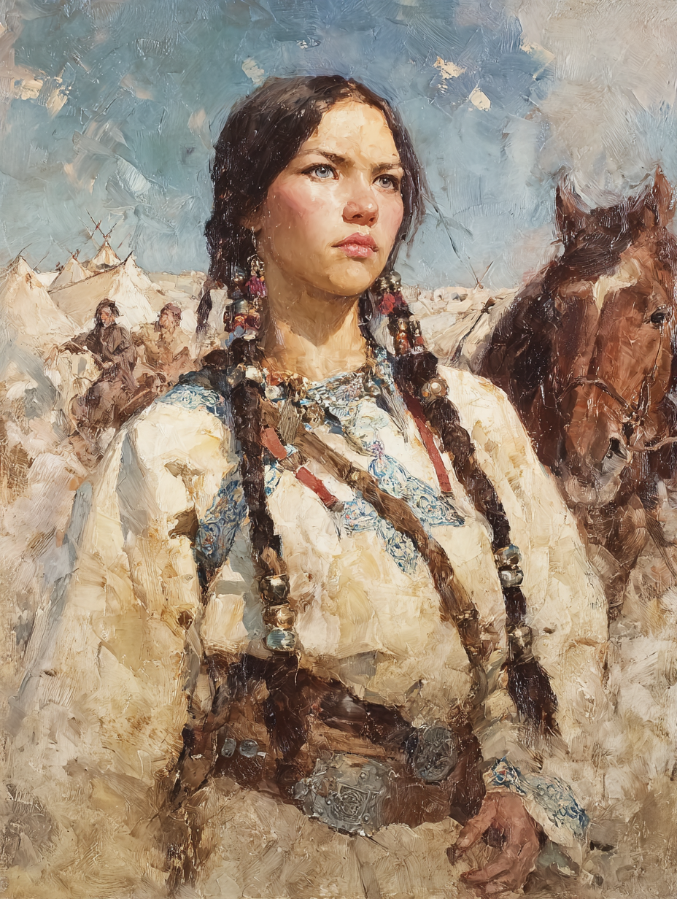

Safiyya bint Tariq al-Qıpçaq
Blood of the Forebears · The Cloud-Eyed Seer-Daughter

Kipchak Turkic · Aged Twenty-One
On the Subject
Safiyya was born in a tent on the steppes north of the Aral Sea, on the night of a winter moon her grandmother claimed could be seen all the way to Tabriz. The clan had been moving westward that season ahead of a drought that the older women had felt in the wind weeks before anyone else; the elder seer of the clan, Safiyya's mother's mother, was on the edge of dying when Safiyya was born, and when she held the infant in the lamplit dim of the felt tent she said two things: that the child's eyes were already her own, and that the seer-line did not skip. The grandmother died three days later. Safiyya does not remember her face, but she has, sometimes, dreamed it.
The seer-line in her family is old. Her grandmother named it the yer-tüb — the deep root — and described it as a chain of women going back to a great seer who once foresaw the coming of a terrible invading army when the steppes were younger, and saved their people by leading them westward before the riders came. Whether that ancestor was real or invented, Safiyya does not know. She knows that when she calls on her power, the woman she hears speaking in the back of her mind is not herself. She knows that when she lets that woman speak through her, sometimes her eyes go pale — actually pale, cloud-colored, in a way other people remark on — and her voice is older than her body.
She is twenty-one, still learning what she is. She has been working with the clan's current senior aunt-seer to learn the practices: the bone-readings, the offerings to the four directions, the way to enter a half-trance without losing the day. She is not very good yet. She trusts the steel of her belt-knife more than she trusts her own power; she would rather hit something with a sling-stone than burn it with witch-fire. The power is real. She is wary of it.
Her clan does not entirely understand her. Her father in particular has tried, several times, to find her a marriage that would settle the gift into a steadier life. She has refused the first three offers and is currently traveling east, away from the western marriage-circuit, ostensibly to study with a more distant aunt-seer on the steppes nearer to Mongol territory. The real reason is that her grandmother's voice has been telling her to go east. She has not told her father this.
Faculties & Saving Throws
Rolled array 9, 10, 10, 11, 12, 12 · Human +1 to all six · Master of Small Tricks: +1 Cha
Bearing on the Route
Skills
| Skill | Bonus | Source |
|---|---|---|
| Perception | +3 | Nakhchivan |
| Survival | +3 | Nakhchivan |
| Arcana | +2 | Sorcerer |
| Persuasion | +4 | Sorcerer |
Class Features
Charisma is her spellcasting ability. Spell save DC 12 · Spell attack +4. At L3 she knows 4 1st-level spells and 5 base cantrips (plus 1 subclass cantrip and 4 from Master of Small Tricks = 9 cantrips total). Spell slots: 1st × 4, 2nd × 2. She knows no 2nd-level spell yet; 2nd-level slots are available to upcast or convert.
Sorcery points = sorcerer level = 3. Convert as a bonus action:
- 2 SP → 1st-level slot · 3 SP → 2nd-level slot
- 1 slot → 1 SP per slot level expended
When she casts a spell that has a casting time of 1 action, she can spend 2 sorcery points to change the casting time to 1 bonus action for this casting. Caveat: the "one leveled spell per turn" rule still applies — pairing a bonus-action leveled spell with another leveled spell on the same turn is forbidden; the action must be a cantrip.
When she casts a spell, she can spend 1 sorcery point to cast it without somatic or verbal components. Strong for the "heritage power" flavor and useful in social or captive settings.
She was born with the power that resides in her blood, and it has been invoked. She may summon her inner power — her ancestor speaks in her mind and aids her for 1 minute. During this minute, she has advantage on any Strength or Constitution checks and saving throws.
She learns one extra evocation cantrip from the sorcerer spell list (free, does not count against cantrips known):
- Acid Splash
A powerful seer once foresaw the day of doom with an upcoming invasion from a terrible army and saved the people. Uncomfortably relevant in a campaign window where the Mongol invasion is the looming present threat.
Inherited Feature: Her pupils resemble clouds when she wishes them to do so. A visible, switchable effect — at rest her eyes are dark brown, but when she calls on the heritage they go pale grey-white, like overcast sky. People remark on it. Her clan recognizes the sign.
Spells & Cantrips
9 cantrips · 4 spells known · Spell save DC 12 · Spell attack +4
- Fire Bolt
- Mage Hand
- Prestidigitation
- Light
- Acid Splash subclass
From the feat — fragments of many traditions her aunt-seer taught her. All cast with Cha as her spellcasting ability (DC 12).
- Guidance cleric
- Sacred Flame cleric
- Mending cleric
- Druidcraft druid
- Shield — Reaction; +5 AC until the start of her next turn. The single most important spell at her HP/AC.
- Magic Missile — Three darts, auto-hit, 1d4+1 force damage each. Reliable damage when she can't afford to miss.
- Sleep — 5d8 hp of creatures fall asleep (lowest HP first); instantaneous, no concentration. At L3 vs tier-1 enemies, this is a fight-ender.
- Detect Magic — Concentration, 10 minutes. Utility.
Feat
- +1 Charisma → final Cha 14.
- Four cantrips of her choice, from any class, counted as her own. She uses her spellcasting ability score (Cha) when casting them.
Her early years with her aunt-seer included learning fragments of many traditions — clerical Tengrist invocations, druidic weather-reads, the small mending-charms her grandmother used to fix bone tools. None of them deep, all of them useful.
Background — Nakhchivan
When tracking other creatures, her experience allows her to know their sizes and their exact numbers.
Like most Kipchak women, she was trained to read tracks, hunt with sling and net, and read the wind for game and weather. The hunting-life is her practical default; the sorcery is the part she is still learning to live with.
Your Journey
Lifepath · rolled and chosen entries from the Silk Road book
A presence at her shoulder since her grandmother died.
Since her grandmother's death (which she does not remember but has dreamt), Safiyya has felt a presence at her shoulder. Her family says this is normal for a seer-line daughter — the yer-tüb root reaches back, and the dead aunts and grandmothers do not entirely depart. She is not sure she believes them. She is also not sure she disbelieves them.
A Kipchak rider three years older. She refused his offer.
A young Kipchak rider three years older than her, in a neighboring clan's wedding-season. He pressed an offer of marriage through his uncle when Safiyya was nineteen. She refused. He accepted the refusal honorably and married a girl from a third clan a season later. She thinks of him sometimes. She is not certain whether refusing was the right call.
An overnight guest, two summers ago, turned with eyes wrong.
An outsider — a Persianate traveler her clan sheltered for a night — turned, in the middle of the night, with eyes wrong and a voice not his own. The aunt-seer drove the djinn out using a binding-chant Safiyya had not learned yet; it took most of an hour. The man survived. He did not remember anything. Safiyya remembers everything. She has been dreaming the chant ever since.
Profession
Silk Road PEX system · Apprentice rank
No free starting abilities at Apprentice rank. All four Apprentice abilities — Detect the Details, Agile Hands, Ancient Funerals and Where to Find Them, Imposing Death — cost 50 PEX each. She is at the start of formal proficiency.
The Grave Robber profession in the supplement is not specifically about looting graves — it captures the broader skillset of someone who works with the dead, reads burial sites, deciphers old runic inscriptions, and is comfortable in places others find unsettling. For Safiyya, this is the cleanest practical-skill complement to her seer-craft: her aunt-seer has taught her to read the bones of ancestors and to spend hours alone in burial-cairn sites listening to the dead speak. Natural first PEX purchase when she has the points: Ancient Funerals and Where to Find Them.
Equipment
- Shortbow — 1d6 piercing; ammunition 80/320, two-handed; −1 to hit non-proficient / 1d6+0; 20 arrows. Nakhchivan starting kit. Sorcerer SRD proficiencies do not include shortbows; she wields it badly when she must.
- Hanchar — Silk Road dagger; 1d4 slashing (handy — may deal piercing), finesse, light; +2 to hit / 1d4+0. Utility. Sorcerer SRD weapon proficiencies include daggers.
- None proficient — She wears nomadic Kipchak felts and a leather kaftan-coat for warmth; treated as ordinary clothing, not armor. AC 10. She relies on Shield (reaction, +5 AC) and party positioning to survive. Mage Armor would raise her unarmored AC to 13 if learned at a future spell-pick.
- Small carved sheep-shoulder-blade bone — a yer-tüb token, given by her aunt-seer at twelve, carved with the symbols of her line. Serves as her arcane focus.
- Thieves' tools — (Nakhchivan.)
- Small bone-and-leather hand-drum — her aunt-seer's gift; used in trance-practice — now a formal tool proficiency per Past Education Option 3.
- Hunting trap — (Nakhchivan kit.)
- Quiver with 20 arrows — (Nakhchivan kit.)
- Set of traveler's clothes — Kipchak felts, leather kaftan-coat, fur-lined hat.
- 10 days of rations — dried mutton, hard cheese, millet.
- Three small offerings-pouches — salt, dried tobacco, milled millet — for the four-directions offerings.
- A single wax-sealed letter — from her aunt-seer, to be opened only when she reaches the eastern aunt-seer she is ostensibly traveling to meet. She has not opened it.
- Belt pouch
- A small steppe pony named Sabal — the Kipchak word for grasshopper, after the horse's first leap as a foal. Left with her clan. She is traveling at the moment on foot and by hired caravan.
Personality
"My grandmother died three days after I was born. I have her eyes. I have, sometimes, her voice. I do not have, yet, her sense of when to use it."
"The root reaches back. I am not the first. I will not be the last. I owe the women before me a faithful walking of this path."
"My aunt-seer raised the gift in me when my mother could not. She gave me a sealed letter for the eastern aunt-seer I am going to meet. I have not opened it. I think one day I will need to."
"I would rather hit something with a sling-stone than burn it with witch-fire. I am supposed to be a seer. Most days I feel like a frightened girl playing at one."
Connections
- Arman of the Black Forge — They have not met. They share a cosmological doubleness that would be visible to either of them within a single conversation: Safiyya's seer-line draws from the Blue Sky (Kök Tengri) and ancestors who walk in the upper world; Arman's patron-bargain draws from Erlik, who rules the fires beneath. The Kipchak shamans Safiyya was raised among acknowledge Erlik without worship — the under-side of the same theology her grandmother's voice speaks from. Arman's village charms against djinn were the southern Persian mirror of the same precaution. If they meet — likely at a roadhouse on the Khwarezm trade-route, where eastbound steppe-folk and westbound Persian travelers cross paths — they will recognize each other within an hour. The recognition will be wary. Each will know the other is touched by the same family of powers, from opposite faces of it. Neither will be sure whether to consider the other an ally.
- Yakub ibn Mansur al-Samarqandi — They have not met. If they do, the meeting will be uneven: Yakub is forty-one and twenty years into his bargain with the unseen; Safiyya is twenty-one and three years into hers. He will recognize her almost immediately — the cloud-eyes are visible, and the Mystic Order keeps records of seer-line bloodlines from the Kipchak and Cuman steppes. He may know her grandmother's name. (He almost certainly does.) She will recognize him by his quiet — the particular quiet of a man who has spent a long time listening to a voice that is not his own — and will not know, at first, whether he is an older version of what she is becoming, or a warning about what she might become. He will not tell her which. He may not himself know.
She is twenty-one and her grandmother is still speaking. I would not press her hard, but I would walk her east — what her root is calling her toward is also where the next map of the world is being drawn, and an expedition that crosses the Aral steppes is the better for a seer who has already heard the wind change.